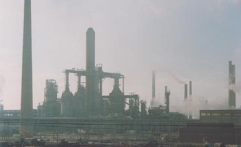

Sécurité

ATTENTION :
odoriférante ou non, toutes les essences sont inflammables. La cuisson des essences ou produits à l'essence est
extrêmement dangereuse.
Elles sont aussi NOCIVES,
même si certains fabricants omettent l'apposition du "Xn-Nocif" sur les flacons,
ainsi que d'autres mentions obligatoires.
L'ingestion d'une cuillerée à café de white spirit ou de térébenthine peut
être mortelle pour des enfants.
Voir Secours, numéros d'urgence.
Après une période
de suspension de la réglementation, ce type d'étiquettes est redevenu
OBLIGATOIRE, mais pour combien de temps ? Les fluctuations de la législation
doivent inciter les utilisateurs à s'informer.
Essences végétales
Les essences végétales ne font pas l'objet d'un texte réellement séparé
dans cet article. Elles sont évoquées singulièrement dans le "Tableau des
essences" (cliquer ici). La raison en est
qu'elles ne connaissent pas une évolution aussi
sensible que les variétés d'origine minérale. Ces dernières méritaient, à
part, un traitement approfondi.
On précisera cependant ici que ces essences - du moins celles qui sont
utilisées dans les arts plastiques et décoratifs - ont une température
d'ébullition curieusement élevée par rapport aux variétés minérales
habituelles, ce qui pourrait signaler des masses moléculaires plus
importantes. Cela pourrait être lié à la présence en elles de composants
terpéniques élaborés. Ces essences ont de toute
façon une véritable "tendance résineuse".
Il est impossible de référer ici à l'ensemble des essences végétales car
il est beaucoup trop disparate et trop immense pour entrer dans le cadre
de ce site.
Essences
minérales, survol

Moyennant quelques précautions
élémentaires, les essences "peu ou non aromatiques"
ne posent guère de problèmes majeurs. Les personnes présentant des
symptômes allergiques en présence d'essences odoriférantes peuvent utiliser des
essences minérales dites raffinées, qui sont conseillées de toute façon pour
les peintures fines. Lire cependant sur l'appellation "raffinée"
la mise à jour ci-dessous.
Dans l'ensemble, la pureté d'une essence
minérale se mesure principalement par sa teneur en hydrocarbures
aromatiques et
en soufre. Cette teneur varie surtout en fonction du
degré de raffinage. On notera au passage que la teneur en soufre détermine aussi
la valeur d'un pétrole brut. Ainsi les raffineries américaines sont-elles
adaptées aux pétroles peu sulfureux, ce qui explique certains choix stratégiques
internationaux. Le pétrole africain (Tchad, Nigeria, Angola, grand off-shore
somalien, Darfour et autres "points chauds" du continent), qui est
pur, n'est à ce titre -
notamment - pas sans attraits pour les raffineurs des États-unis, mais aussi de
Chine. Source :
Bruno ANGSTHELM, CCFD, pour le F.I.G. Saint Dié sur Education.gouv.fr.
Toute essence minérale est raffinée,
presque par définition, puisque l'on part d'un produit oléagineux
particulièrement sale, le pétrole (petra oleum, huile de pierre), mais en fonction du procédé et du
positionnement dans la colonne de
distillation, on obtient des résultats
plus ou moins purs. En fin de chaîne, dans un atelier bien aéré ou un laboratoire, une essence assez impure peut être soumise à
évaporation quoique sans garantie de résultats. En général, l'odeur s'échappe en
grande partie et peut être "couverte", masquée par
l'addition d'une menue quantité
d'essence d'aspic.
Ainsi, certains white spirits
soi-disant "désodorisés" (en fait "ré-odorisés") ont été "designés" de cette
manière dans un passé relativement récent. Un raffinage de niveau supérieur est
cependant indispensable pour évacuer véritablement la plus grande partie des impuretés
sans perdre la précieuse part active du produit. Les solutions maison en fin de chaîne
sont du bricolage.
La nouvelle donne
Tout d'abord, l'appellation "essence de
pétrole raffinée" semble avoir peu ou prou disparu.
Alertés par un partenaire détaillant,
nous avons contacté un ingénieur travaillant pour une entreprise intermédiaire
qui réalise notamment du "design de produits".
Cet ingénieur, appelons-le Mr. X, a tout
d'abord rappelé le contexte : les peintures non-aqueuses
disparaîtront en 2012 suite à une directive européenne. Cela explique au passage
la campagne anti-glycéro actuelle (lire
passage du Courrier des Lecteurs). Il n'est pas sûr que l'utilisateur final s'y retrouve en termes de santé car
on pourrait aussi bien évoquer la polémique sur la toxicité des peintures aqueuses appelées à les
remplacer (cf. autre texte
du Courrier), mais c'est une autre histoire. Il s'agit simplement ici de pointer
une mutation à venir.
Celle-ci a d'ores et déjà un impact important sur plusieurs métiers industriels et
artisanaux (même si sur le versant industriel, les liants interdits seront tout
simplement exportés hors UE). Les évolutions
technologiques s'ajoutent à ce contexte pour produire une certaine confusion terminologique.
Un détaillant - comme un intermédiaire ou n'importe qui - peut trouver les
descriptifs détaillés d'un éventail de produits sur les sites internet des producteurs tels
que Total, Shell, etc., sous l'intitulé général "white spirit". Au-delà,
l'intermédiaire peut choisir un autre intitulé. In fine, le détaillant est bien en
peine de répondre à la demande du client final, le peintre, venu acheter sa
chère "essence de pétrole raffinée" disparue : de quel produit s'agit-il
aujourd'hui ?

Champ pétrolifère à ciel ouvert
Kirkuk, Kurdistan irakien, 1953
Points de
repère
A défaut d'appellations claires, essayons de donner quelques points de repère chiffrés. On
remarque au passage, en écho au début de cet article, qu'il n'est même plus
question de soufre à ces niveaux de raffinage (sinon dans quelques documents
extrêmement techniques). Tout se joue donc dans la teneur en hydrocarbures
aromatiques.
* Mr. X cité ci-dessus pense qu'à 0,05% d'aromatiques, une Kerdane (appellation producteur) est déjà exploitable en
peinture. Ce point discutable est évoqué plus loin.
* Il signale également à titre d'exemple une sorte de "super white
spirit" à 0,03%, la Spirdane D40.
Il s'agit en fait ici d'essences plutôt utilisées en peinture décorative
très "haut de gamme". Concernant les essences minérales à destination artistique,
lisons François Perego. Tout d'abord, il
distingue trois catégories d'essences :
* Les légères. Coupes étroites dites de "C5" à
"C7" dans la colonne. Nous reviendrons sur ces appellations.
* Les white spirits. C9 à C12, jusqu'à 20%
d'aromatiques mais parfois beaucoup moins.
* Les kérosènes. C10 à C14.
A ce stade il n'est pas inutile de
lire
l'encadré de l'article
Distillation, raffinage
Sans entrer dans le détail, les coupes Cn correspondent à la longueur des
chaînes moléculaires mesurée en nombre d'atomes de carbone. Ainsi, par exemple l'heptane (C7H16)
est dans la coupe C7 et l'octane (C8H18) dans la coupe C8. Plus le n augmente, plus on s'approche du bitume.
Pour autant, ces "coupes" n'ont aucun rapport direct avec par exemple la
teneur en alcanes plutôt qu'en alcènes
(source INRS) ou même en benzéniques. Il ne s'agit pas ici de type d'essences mais
littéralement de poids
moléculaires.
F. Perego précise également que :
* Les essence légères seraient les fameuses essences
C et F. Mais rappelons 1) que l'on se sert de ces variétés en gravure ou comme
dissolvants, pas en peinture, 2) que comme on l'a dit, les coupes ne
correspondent pas à des types d'essences précis, les C7 à C9 par exemple pouvant être
des alcanes, des alcènes, cycliques ou non, aussi bien que des aromatiques, ce
qui pose un problème de qualité qui doit être souligné.
* Une essence bien raffinée, véritablement apte
à la peinture artistique, doit contenir selon lui entre 0,01 et 0,001% d'aromatiques.
Ainsi, la Spirdane D40 ne conviendrait pas encore tout à fait.
Ajoutons que les intitulés "essence A" à H correspondent à des tranches
(irrégulières) de
températures de distillation (de 30 à 210°C). A ce sujet, lire
ce document de l'INRS.
Un fabricant bien connu de produits Beaux-arts interrogé par le détaillant qui a initié
cette enquête précise que les produits sont moins toxiques que par le passé
mais les précautions d'emploi sont toujours d'actualité. La plupart des
fabricants proposent de plus des essences "sans odeur" présentant des taux
d'agents aromatiques plus faibles.
Étant donné les changements terminologiques et les transformations
réglementaires à venir, Dotapea ne saurait trop conseiller l'ensemble des
intervenants d'annoncer clairement le taux d'aromatiques des essences afin de maintenir une
relation de confiance avec les consommateurs dans l'intérêt de tous car c'est ce
taux qui détermine les facteurs de loin les plus importants, tant en peinture
artistique que décorative :
* la qualité des couleurs obtenues in fine sur
le tableau car une essence minérale trop aromatique les voile,
* l'innocuité des produits. Les aromatiques sont toxiques (lien).
Que trouve-t-on dans les essences
minérales ?
On peut distinguer quelques types de corps presque omniprésents dans les
essences :
* les alcènes
(insaturés) et les alcanes (saturés), sous forme de
chaînes ouvertes ou cycliques (voir absolument les chaînes)
* les aromatiques,
cycliques, de base benzénique.
Quelques exemples :
* L'essence F
* alcanes en C7, C8 et C9 : 65 à 85 %.
* alicycliques (on parle probablement ici
de cycloalcanes) en C7, C8 et C9 : 20 à 25 %.
* aromatiques (toluène, xylène, éthylbenzène.) : <
14 %, selon cette source, en fait plutôt beaucoup moins car cette essence comme
les autres essences dites spéciales comptent parmi les plus désaromatisées sur
les catalogues industriels (même par rapport aux white spirits les plus purs).
* Une essence automobile ordinaire
* 20 à 30 % d'alcanes
acycliques
* 5 % de
cycloalcanes
* 30 à 45 % d'alcènes
* 30 à 45 % d'aromatiques.
D'autres sources donnent 25-30%
* des pourcentages variés d'agents divers.
* Un white spirit de supermarché
* aliphatiques linéaires : 30 à 50%
* alicycliques : 30 à 40%
* aromatiques : 10 à 20%.
* Un carburant pour avions à réaction
contiendrait bon an mal an
* 87,5% d'alcanes
* 12% d'aromatiques dont 0,3% de benzène et 1% de
toluène
* 0,5% d'alcènes.
Ces données viennent de plusieurs sources et sont livrées sans garanties.
Elles sont de plus fluctuantes.
Tableau des essences
ayant un pouvoir diluant pour les peintures grasses
|
Produit
|
Caractéristiques principales
|
Odeur,
dangerosité, toxicité
|
|
ESSENCES
VÉGÉTALES
|
|
Essence de térébenthine
|
Bon tirant
dû à ses résines végétales. N'appauvrit qu'assez peu la pâte pour la même
raison. S'apparente déjà à un médium léger : certains la classent même
parmi les vernis à peindre. Séances plutôt courtes à cause du poissant qui
a tendance à figer la pâte plus rapidement qu'une essence minérale.
L'essence de térébenthine est déconseillée pour le
nettoyage des pinceaux et outils car, contenant des résines végétales,
elle les rend poisseux.
On distingue
*
la térébenthine proprement dite qui n'est pas une essence (lire
l'article du glossaire),
*
l'essence de térébenthine, produit de la distillation de la
térébenthine (informations complémentaires dans un
article du
courrier des lecteurs),
*
l'essence de térébenthine rectifiée (c'est à dire ayant subi
une distillation supplémentaire accroissant sa fluidité). C'est elle
que l'on utilise le plus en peinture à l'huile,
*
l'essence de térébenthine tri-distillée. Moins odoriférante,
moins allergène, elle est aussi, forcément, moins riche en résines. Un
procédé de fabrication a été établi par le Docteur de Mayenne dont
certains fabricants actuels s'inspirent directement. Il est permis de
s'interroger sur la valeur concrète d'un tel produit car l'intérêt de
la térébenthine réside précisément dans ses impuretés et sa masse
moléculaire.
Toute essence de térébenthine trouble, recelant des
pulvérulences visibles à l'oeil nu, peut être considérée comme suspecte.
Toutes sortes de fraudes ont été pratiquées et les conditions de stockage
peuvent aussi accentuer les dégradations.
Il faut en effet préciser que cette essence s'oxyde
avec le temps. Fraîche, elle doit être assez peu odorante (information
F. Perego).
La température d'ébullition de l'essence de
térébenthine est d'environ 150-175°C, un peu moins que l'essence d'aspic
(ci-dessous). Sa masse moléculaire globale n'est semble-t-il pas
négligeable.
Comme son nom l'indique, elle contient des
terpènes.
Recyclage "maison" de la térébenthine usagée
Il est très aisé à réaliser : il suffit de consacrer
un contenant à la décantation ! Celle-ci s'opère toute seule et donne
d'excellents résultats avec la peinture à l'huile. Lorsque la quantité de
résidus est devenue trop importante (il faut des mois !), laissez sécher
comme s'il s'agissait d'un tableau. Si vous n'utilisez pas de siccatifs ou
d'autres produits contenant des métaux lourds, vous pouvez jeter le pot
bien sec dans une poubelle.
Si vous réalisez certaines
expérimentations ou lors de nettoyages, attention : l'essence de
térébenthine est chimiquement incompatible avec plusieurs produits à base
de chlore (éviter l'eau de Javel).
|
Lire un ajout important au courrier des lecteurs
consacré à la nocivité de cette essence.
Cliquer ici.
Odeur forte, agréable pour
certains, insupportable ou allergénique pour d'autres (réaction cutanée),
particulièrement avec les variétés de basse qualité.
NOCIF
L'ingestion, même en petite
quantité, est extrêmement dangereuse et peut entraîner la mort d'un
adulte, notamment par crise cardiaque. L'inhalation et le contact sont
généralement beaucoup plus bénins mais doivent être évités autant que
possible.
Stocker hors de portée des
enfants et des animaux.
GRAND POLLUANT DES COURS D'EAU
Les résidus doivent être
confiés aux
institutions chargées du
traitement des déchets.
Voir aussi
Recyclage, ci-contre.
|
|
L'essence
d'aspic (lavande)
|
A ne pas confondre avec l'essence de lavande (ou de
lavandin) qui ne correspond pas à la même variété de lavande, aux mêmes
préparations ni aux mêmes compositions. Il y a très peu de camphre par
exemple dans l'essence de lavande ou de lavandin par rapport à l'aspic.
Celle-ci est extraite des sommités florales de
Lavandula latifolia Vill.
Le mot aspic proviendrait du latin spicus,
épi. On nomme d'ailleurs aussi la plante lavande à épis.
L'étymologie de la vipère du même nom n'aurait guère de rapport selon
l'Académie française. En anglais elle se nomme spike lavender.
Moins volatile et moins
tirante que la térébenthine, elle est assez mordante (bon pouvoir
solvant). Diluée dans l'essence de pétrole pour modérer cette tendance,
elle se prêterait aux fins de séances (pour prolonger) mais aussi,
notoirement, à l'imbibition des
surfaces en vue de retouches.
On mentionne son utilisation ancienne (très
marginale) comme vernis léger.
L'essence d'aspic contient du
camphre et une dizaine d'autres molécules. Comme la térébenthine, elle
contient une part déterminante de terpénes.
C'est semble-t-il une essence plutôt lourde (moléculairement
parlant), qui bout autour de 190°C ± 15°C.
|
Odeur agréable mais forte !
Les notices de sécurité sont
généralement très peu documentées.
NOCIF
|
| L'essence de
romarin |
Apparemment abandonnée, elle est mentionnée par
Xavier de Langlais qui lui-même reconnaît ne pas l'avoir essayée.
Toute information sur ce produit sera bienvenue.
|
|
|
ESSENCES
MINÉRALES
|
|
L'essence de pétrole raffinée,
l'huile essentielle de pétrole |
Mise à jour
2009 : lire absolument en premier le passage "Nouvelle
donne".
N'ajoute aucun tirant, aucun poissant. Pour cette
raison, elle permet de travailler très longtemps dans le frais. S'évapore
complètement - en théorie, si elle est de bonne qualité. Elle a tendance à
appauvrir la pâte comme tout pur diluant. La matière, une fois sèche,
semble plutôt maigre et plutôt mate, ce qui n'est aucunement un défaut
mais bien une particularité qui peut être exploitée à bon escient.
L'appellation "huile essentielle de pétrole" est une
sorte d'archaïsme linguistique. Il s'agit bien d'une essence dont on nous
dit non explicitement qu'elle n'est pas raffinée. L'étiquette porte le X
nocif. L'usage en peinture de l'essence de pétrole raffinée est par
contre éprouvé depuis longtemps.
L'appellation "essence de pétrole" que nous voyons
apparaître parmi les produits du commerce actuellement laisse toujours
planer un doute : quel est au juste son niveau de raffinage?
Plus clairement : certains
distributeurs spécialisés dans les arts plastiques proposent aux peintres
des promotions sur des "essences de pétrole" qui, manifestement, à en
juger par leur odeur infecte, ne sont pas désaromatisées et sont donc à
peu près inutilisables comme diluant, voire toxiques. Ce genre de
pratiques se situent juste en deçà des limites de l'escroquerie. Elles
doivent inciter les artistes à signaler en premier lieu les faits au
détaillant (qui n'est pas forcément informé) et à changer éventuellement
et selon le cas de fabricant ou de détaillant.
Lors du choix d'une essence de
pétrole destinée à la peinture, il est très important de vérifier la
présence de l'épithète "raffinée" sur l'étiquette. L'essence désaromatisée
n'a pas non plus la qualité suffisante pour un emploi en peinture, sauf
pour des travaux mineurs (voir
ci-dessous).
|
Pratiquement aucune odeur sauf
certains produits à l'appellation trompeuse (voir texte en couleur
ci-contre). Celles-ci pourraient comporter des substances dangereuses.
NOCIF
Éviter surtout l'ingestion.
Le contact avec la peau peu
parfois dessécher celle-ci mais dans une moindre mesure que le white
spirit.
|
|
Kerdane
® et autres essences désaromatisées |
Mise à jour 2009 : lire absolument
en premier le passage "Nouvelle donne" et en
particulier les Points de repère. Il
s'agit de parents pauvre de l'essence de pétrole raffinée. Elles ont
tendance à voiler légèrement les couleurs. Étant impures, elle peuvent
entrer en réaction avec les pigments et médiums, quoique beaucoup moins
radicalement que le white spirit. Certains peintres, parfois de très bons
professionnels ne disposant que de budgets limités, s'en servent cependant
beaucoup.
Elles sont vraiment très pratiques, peu coûteuses et particulièrement
efficaces pour le nettoyage du matériel
(pinceaux, etc.) ainsi que comme diluants pour la peinture décorative. A
part leur inflammabilité et leur nocivité en cas d'ingestion - caractères
inhérents aux essences -, elles ne semblent pas présenter un caractère
spécifiquement très dangereux. Il s'agit de produits de grande utilité.
Note : le terme "pétrole lampant" correspond sensiblement à ces essences. |
Pratiquement aucune odeur.
NOCIF
|
|
White spirit |
Précision 2009 : On appelle
aujourd'hui white spirit des produits ne correspondant plus à l'usage ancien
de ce terme. Lire ci-dessus La nouvelle donne.
La description correspond essentiellement au white
spirit ménager.
Bon dissolvant, bon produit de nettoyage, il est trop impur et par
conséquent mauvais comme diluant : trop chargé d'éléments
aromatiques fortement dissolvants, il
peut aussi contenir du
soufre et risque d'entrer en réaction avec les composants de la pâte.
Certains peintres l'utilisent néanmoins comme diluant notamment pour créer
des effets un peu... sales !
Contenant des hydrocarbures benzéniques, le white spirit est moins anodin
que les essences raffinées et désaromatisées quant à ses effets sur l'être
vivant.
|
Odeur désagréable, soûlante voire
vraiment incommodante. Son ingestion en petite quantité par un enfant peut
entraîner la mort.
Éviter les contacts avec la peau.
POLLUANT
NOCIF
|
|
Essence "C" |
Un produit dont la distribution se révèle à éclipses,
probablement pas anodin. On en trouve, on n'en trouve plus pendant un
temps, puis on en trouve à nouveau. Actuellement, elle semble disponible.
Informations complémentaires ci-dessus (Points
de repère).
|
Nous manquons d'informations.
NOCIF ou TOXIQUE
|
|
Essence "F" |
Elle est annoncée par les fabricants comme un "dissolvant
des peintures synthétiques". On mentionne des usages marginaux dans
différents domaines des arts plastiques.
Informations complémentaires ci-dessus (Points
de repère).
|
Nous manquons d'informations.
NOCIF ou TOXIQUE
|
|
Essences aromatiques et autres produits
benzéniques |
Benzène, toluène et xylène sont des hydrocarbures
benzéniques qui ne trouvent guère d'emploi comme produits purs
pour les arts plastiques, sinon celui de dissolvant "brutal".
Ce sont en effet des dissolvants remarquables, mais par eux-mêmes, ils
présentent une toxicité réellement très inquiétante. Ils peuvent provoquer
la mort et sont transmissible au fotus et au bébé (lait maternel). Ils
sont pourtant présents, mais pas à l'état pur, dans une quantité non
négligeable de produits utilisés couramment par les artistes.
Lire absolument l'article Benzène, toluène et xylène,
etc.
L'essence de mirbane (un nom poétique trompeur), dite aussi,
nettement plus à propos, "nitrobenzène" (C6H5NO2),
est un toxique aromatique huileux utilisé comme précurseur de colorants
(voir anniline) mais aussi comme agent
conservateur (lire passage in
La caséine) et en parfumerie.
L'aniline est traitée
séparément. Cliquer ici
Le styrène est traité dans
une autre page (cliquer ici).
|
Odeur infecte.
POLLUANTS
TOXIQUES
RISQUES TRÈS IMPORTANTS EN CAS D'INCENDIE |